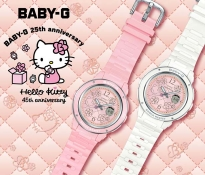
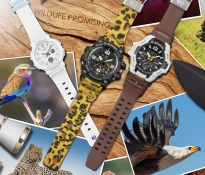
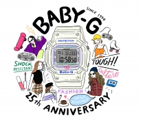
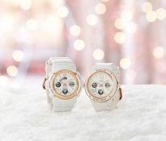

NEWS
VIEW ALL

Mar. 12, 2019
BABY-G × Hello Kitty Pink Quilt Series 聯名錶款 粉紅針織菱格深受90年代日本年輕女性喜愛

Feb. 26, 2019
G-SHOCK & BABY-G 致力支持野生動物生態保育 攜手野生動物保護組織WILDLIFE PROMISING推出聯名錶款

Jan. 23, 2019
BABY-G歡慶誕生滿25周年 復刻初始版錶款 BGD-525正式推出

Dec. 7, 2018
G-SHOCK & BABY-G 2018 LOVER'S COLLECTION 愛神丘比特與公主普賽克永無止境的愛情